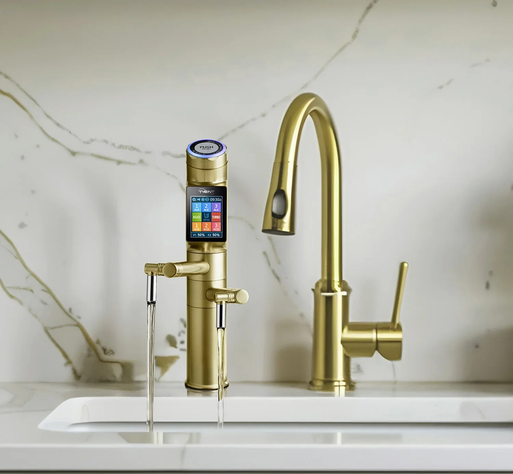

Dipped platinum-coated titanium
Solid titanium plates, coated with platinum by dipping, carry the charge that ionizes your water. Up to 13 plates in ACE-13 and UCE-13 Plus.
The difference between ionizers is mostly hidden: the plates, the power, the filters, and who answers the phone a year later. Here is what goes into a Tyent.
 13platinum platesAuto-cleaning on
13platinum platesAuto-cleaning onSix reasons
Families choose Tyent for the water. They stay for the way the machine is built and looked after.
Solid titanium plates, coated with platinum by dipping, carry the charge that ionizes your water. Up to 13 plates in ACE-13 and UCE-13 Plus.
The power supply reads your water and flow rate and adjusts the charge, so output stays steady from the first glass to the last.
Carbon and ultra-filtration stages remove chlorine, rust and sediment before water ever reaches the plates.
Reverse-polarity cleaning runs by itself to stop scale building up, which protects performance over the years.
Touchscreens, jog dials and under-counter faucets, recognised by Good Design Korea, in finishes that suit Indian kitchens.
Water testing, installation, filter delivery and service from the Tyent India team, for as long as you own the machine.

Inside the machine
Inside the cell, filtered water flows between charged plates. The plates split the stream into an alkaline side for drinking and cooking and an acidic side for cleaning and skin care.
More plates mean more surface area working on your water, so the machine can reach stronger settings and keep them steady at a faster flow.
A fair comparison
RO purifiers are common in Indian homes, and in some areas they are needed. Here is how the two approaches differ, so you can choose what suits your water.
| What you get | Typical RO purifier | Tyent water ionizer |
|---|---|---|
| Removes chlorine, rust and sediment | Yes | Yes, with two-stage filters |
| Handles very high TDS water | Yes, this is RO's strength | Needs a suitable pre-filter; we test first |
| Keeps natural minerals in the water | Removes most of them | Keeps them |
| Choice of water types | One | Seven, from acidic to turbo |
| Acidic water for cleaning and skin | No | Yes |
| Storage tank | Usually | No, poured fresh |
Where source water is very high in dissolved solids, our team may recommend a pre-treatment stage before the ionizer. A free water test tells you which applies to your home.

Design
A water machine sits in the most used room of the house. We design every Tyent to look like it belongs there, with brushed steel, soft light and clear screens.
Prefer a clear counter? The UCE-13 Plus hides below the sink and leaves only a slim faucet in Satin Silver, Matte Black, Gold or Antique.
Explore UCE-13 PlusRecognitions
Tyent products carry recognitions from testing and design bodies in Korea, the United States and Europe.
Book a free home demonstration. A Tyent specialist will test your water and show you every setting.